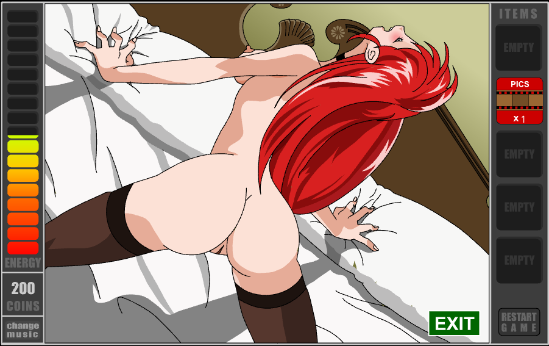
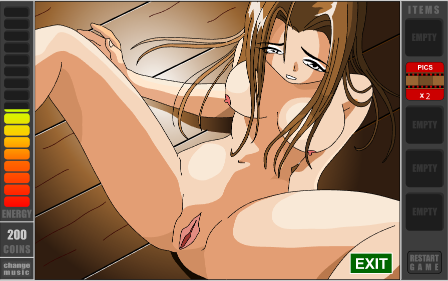
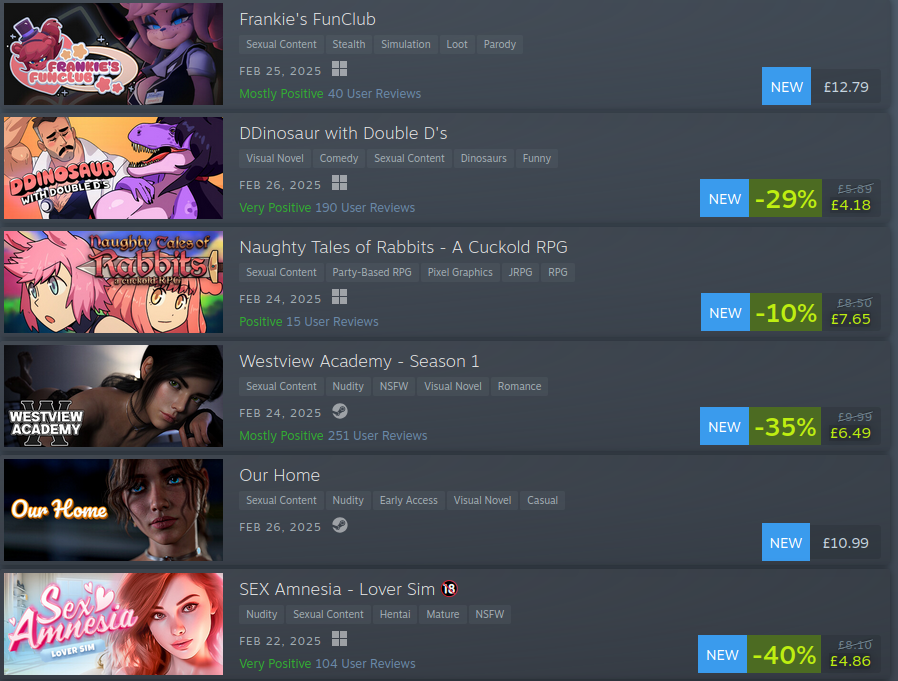

The Life and Death(ish) of Hentai Games
27/02/2025
Once upon a time, I was a horny teenage boy. Now, I'm a horny adult woman.
I also (as is probably obvious from a bunch o0f other pages on this blog) grew up in the golden age of the internet, when the whole thing was new and exciting. A decentralised wonderland, where you could find anything and everything.
Which, obviously, meant there was a lot of porn on it. The internet today is safe and sanitary, which. Like. OK. Yes, it's safer for kids. But now that spaces are for everyone, including kids, those rough edges are gone. You're extremely unlikely to stumble upon someone writing about the hentai comics of Sonic the Hedgehog unless you're specifically looking for it. Adult only spaces have been stripped away, smoothed off and siloed into very specific places. Pornhub, Xtube... I know these names better than I know my own grandmother's.
Back in the day though, porn was everywhere. As detailed previously, my first experience of pornography was on Sonic Cult, but shortly after that, I discovered hentai flash games. By accident, in fact.
Flash games evoke nostalgia in basically everyone who grew up in the 00s. For many it was Newgrounds or CoolMathGames, but for me, it was funnyjunk. Funnyjunk was a content aggregator - it's where I first saw a bunch of weebl's stuff cartoons, blode, strongbad. It also linked out to a few other flash collection websites, one was a site that collected hundreds of flash games. Sadly, the name escapes me now.
I played a lot of (relatively) tame stuff on that site! It was all nicked from newgrounds or armorgames or whatever, but I had a lot of fun hitting 'random' and finding Interactive Buddy, Bowman 2, that penguin clubbing game, you know. But also plenty of rougher stuff!
Anyway, one day I hit random and came across a game called Frank's Adventure - a top down lite RPG. I gave it a go, as I always did, without really reading the instructions.
Played through, ran around the world, played the skiing minigame that Tye from Digimon offered you. After a bit of effort, I beat the game, and got presented with this screen:
{kind=link}
THAT'S A FUCKIN TITY. TITY? IN VIDEO GAME? I'M THIRTEEN YEARS OLD THAT'S TWO OF MY FAVOURITE THINGS IN ONE!
Now look. I'm not gonna pretend the art in this game is the best hentai in the world. This is another of the 'pics' you get, and other than looking a bit like Aerith it's pretty poor. Look at the rendering on that pussy. Poor show.
{kind=link}
But this experience flipped a switch in my brain. The idea of being able to play video games and get rewarded for succeeding with a titty was insanely enticing for me, a cumbrained idiot. So I spent an insane amount of time searching out 'free online sex games.'
And with the aforementioned era of the internet, there was absolutely no shortage of them! Which was great for me as a horny teenager. But, sadly, this entire genre is disappearing, at least in any kind of properly creative sense.
Plenty of porn games still exist, but by and large they have a decidedly different oeuvre than their heyday of the early internet. They're on steam and itch now, which is cool, but if I bring up the top selling adult games, well, the list looks like this:
{kind=link}
There's only one way to describe this: extremely fuckin' hetty. Apart from that top result, which is some kind of FNAF porn parody thing. Aside: furries fucking rule and they deserve the world.
And look. Politically, yes, hentai games of old are pretty het too. Being 'rewarded' with sex for basic video game chores is terribly objectifying. But the modern hardware and lack of limitations on what people are able to make means the games feel more het, more cookie cutter. Not to 'back in my day,' but like everything else made in flash, hentai games had real personality. You could track a creator's works and lineage - Z0ne is probably the most well-known example of this, but they're far from the only one. Mittsies is out there making full-ass video games like Helltaker and Awaria now, which are excellent, and they got their start making MLP porn games, many of which had some pretty extreme kinks in them. Game recognise game, Mittsie.
So why am I writing this? Well, in short, I want to chronicle some of these games. Revisit some favourites, if you will. Maybe even do some analysis! Why do they work, why do they titillate? What is it about porn games that buzzes a certain subsection of brains just right? We may even find out something about ourselves along the way.
This will be an ongoing project, with this post being the kickoff. I will be updating irregularly. I don't promise to complete every game (some are huge undertakings!) but I will play for at least half an hour or so to get some reasonable impressions of each game.
Cool. OK, some housekeeping. First of all, cards on the table, I've dabbled in this field before. Long ago I made a game called Ace Attorney: The Dark Age of Love for a porn game jam run by other noted lover of porn games, eevee. (She's making her own game, fox flux, which is porny if you're weird with it! For any hets reading this don't worry about it). It actually ended up getting featured on Kotaku UK, then later, the mothership itself. It's not good, by any stretch, but I did make it to impress my now-wife, so it did what it needed to do, and it has over 14,000 downloads on Itch.io. It's probably the most statistically significant thing I will ever do as a creative, which is weird to think about. But the point is, I contributed to the scene as well as consumed, and I feel pretty cool about that, honestly.
Secondly: how do we play these games nowadays? Flash is long-dead, after all. Well. That, my friend, is where Flashpoint comes in. Essentially Archive.Org for flash games, applets, headers and so much more, it is an astonishing project that really doesn't get the recognition it deserves. Flashpoint provides a launcher, a packaged version of flash player that works on modern hardware, ruffle (a flash emulator) for the games that support it, and an exhaustive list of almost every flash Thing you could possibly imagine, all in one convenient package. 18+ flashes are excluded from the search by default, so we'll be toggling them on in the config if you want to play along at home.
Thirdly: These games are all products of their time, and may contain content that some may not prefer to see. I will be operating to some extent under a [Creator Chose Not To Use Archive Warnings] structure, where most things will not be content-warned. I will, however, make exceptions for things we may stumble across that include racism, homophobia, or other things that fall under the category of hate speech. I do not expect to see much of this, but there will likely be racist caricatures from time to time. Additionally, any particularly extreme kinks will be warned for; e.g. incest, lolisho, scat, etc. Any screenshots containing warned kinks will not be shown in-line and will only be text-linked. Everything else is fair game and will be shown in-line, so don't read these entries at work!
Finally, this is a bit out of the realm of probably expected posts for this blog, so entries in this diversion will not be listed on the main RSS feed. I will be maintaining a separate one (linked at the top) that you can subscribe to if you want to know when I make a new post in this series.
Cool, with all that said, expect the first post sometime this week! I dunno what it'll be on. Maybe I'll let Flashpoint RNG us. See you then!